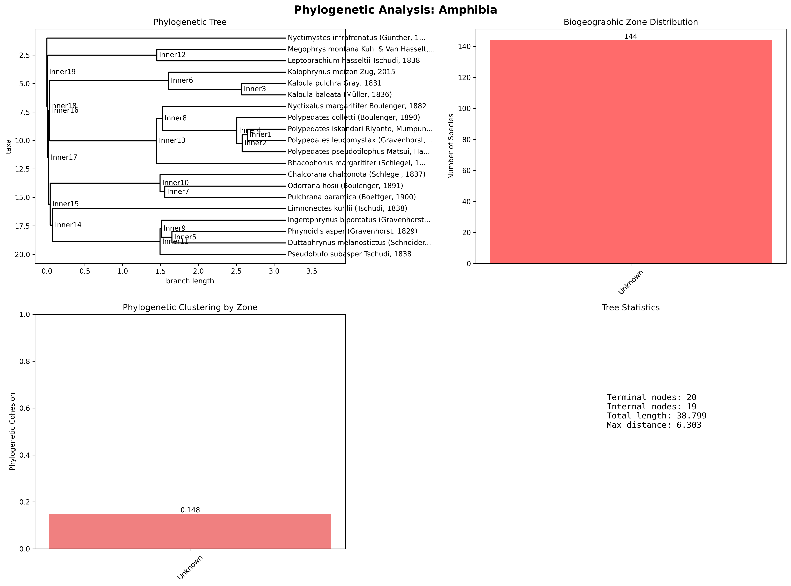
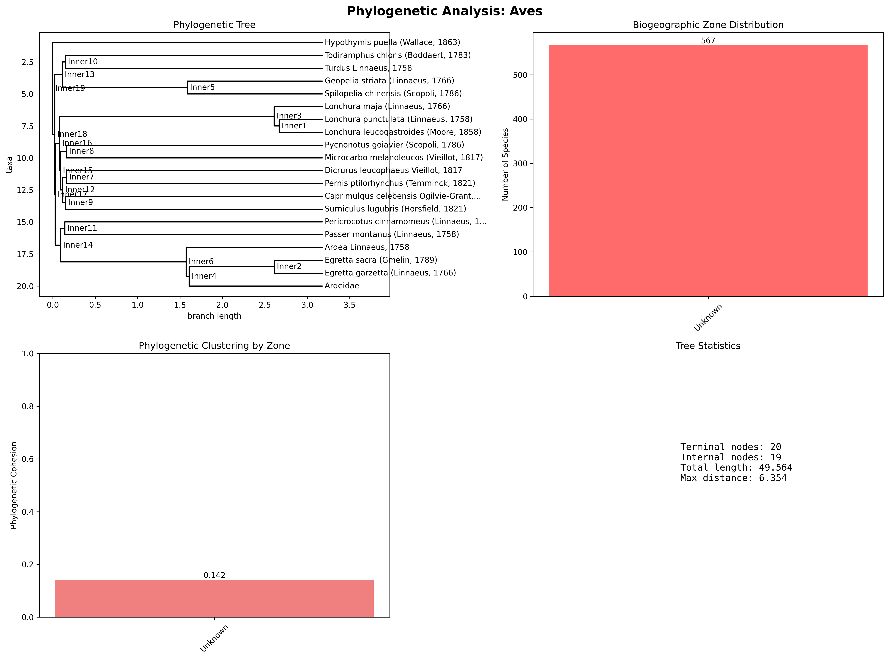
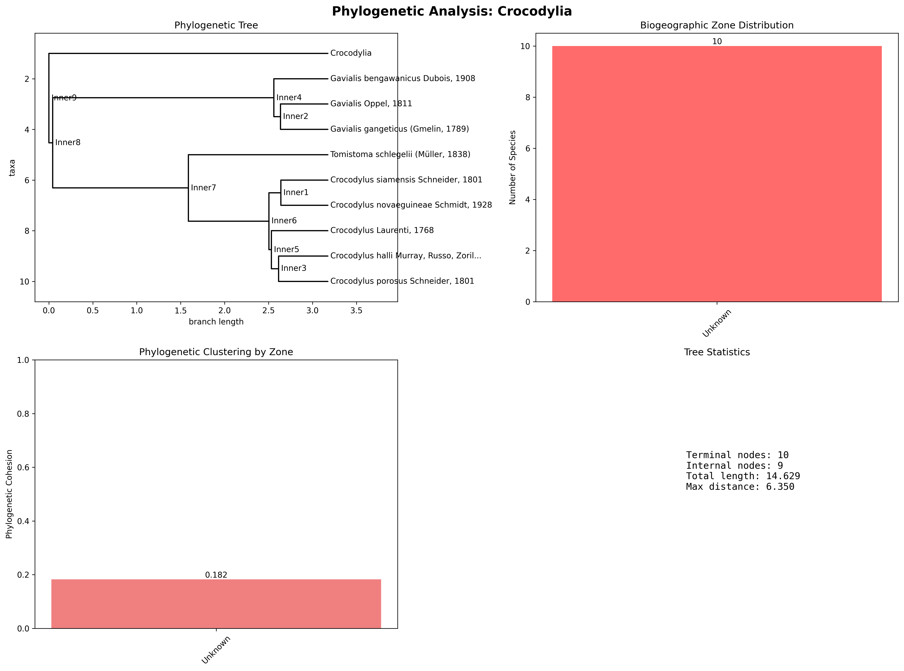
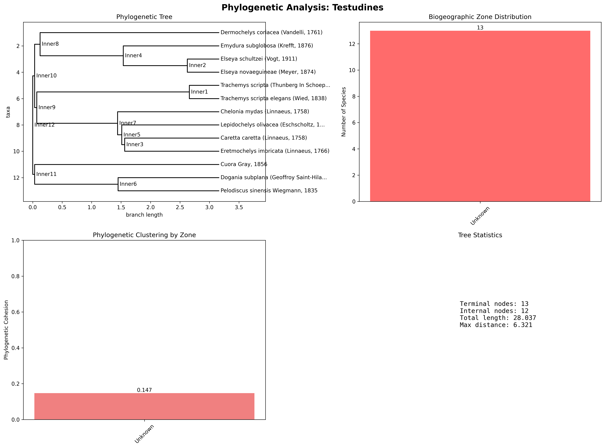

🧬 BioNusantara: Phylogenetic Analysis Report
Evolutionary Relationships and Biogeographic Patterns in Indonesian Vertebrates
Generated: 2025-06-01 14:08:47
📊 Analysis Summary
🌳 Trees Constructed
6
🔬 Species in Trees
103
🗺️ Biogeographic Zones
1
Unknown📈 Analysis Methods
UPGMA, OTOL API
Biogeographic Mapping🔬 Taxonomic Group Analysis
🦎 Amphibia
📊 Tree Statistics
- Terminal nodes: 20
- Internal nodes: 19
- Total branch length: 38.933
- Maximum distance: 6.266
🌍 Biogeographic Distribution
• Unknown: 20 species
🔗 Phylogenetic Clustering Analysis
| Zone | Species Count | Avg. Phylo Distance | Phylo Cohesion |
|---|---|---|---|
| Unknown | 20 | 5.731 | 0.149 |
🖼️ Phylogenetic Visualization
🦎 Aves
📊 Tree Statistics
- Terminal nodes: 20
- Internal nodes: 19
- Total branch length: 49.831
- Maximum distance: 6.316
🌍 Biogeographic Distribution
• Unknown: 20 species
🔗 Phylogenetic Clustering Analysis
| Zone | Species Count | Avg. Phylo Distance | Phylo Cohesion |
|---|---|---|---|
| Unknown | 20 | 6.067 | 0.142 |
🖼️ Phylogenetic Visualization
🦎 Crocodylia
📊 Tree Statistics
- Terminal nodes: 10
- Internal nodes: 9
- Total branch length: 14.539
- Maximum distance: 6.298
🌍 Biogeographic Distribution
• Unknown: 10 species
🔗 Phylogenetic Clustering Analysis
| Zone | Species Count | Avg. Phylo Distance | Phylo Cohesion |
|---|---|---|---|
| Unknown | 10 | 4.477 | 0.183 |
🖼️ Phylogenetic Visualization
🦎 Mammalia
📊 Tree Statistics
- Terminal nodes: 20
- Internal nodes: 19
- Total branch length: 56.973
- Maximum distance: 6.298
🌍 Biogeographic Distribution
• Unknown: 20 species
🔗 Phylogenetic Clustering Analysis
| Zone | Species Count | Avg. Phylo Distance | Phylo Cohesion |
|---|---|---|---|
| Unknown | 20 | 6.189 | 0.139 |
🖼️ Phylogenetic Visualization
🦎 Squamata
📊 Tree Statistics
- Terminal nodes: 20
- Internal nodes: 19
- Total branch length: 47.153
- Maximum distance: 6.347
🌍 Biogeographic Distribution
• Unknown: 20 species
🔗 Phylogenetic Clustering Analysis
| Zone | Species Count | Avg. Phylo Distance | Phylo Cohesion |
|---|---|---|---|
| Unknown | 20 | 5.959 | 0.144 |
🖼️ Phylogenetic Visualization

🦎 Testudines
📊 Tree Statistics
- Terminal nodes: 13
- Internal nodes: 12
- Total branch length: 27.875
- Maximum distance: 6.282
🌍 Biogeographic Distribution
• Unknown: 13 species
🔗 Phylogenetic Clustering Analysis
| Zone | Species Count | Avg. Phylo Distance | Phylo Cohesion |
|---|---|---|---|
| Unknown | 13 | 5.781 | 0.147 |
🖼️ Phylogenetic Visualization
🔑 Key Findings & Notes
🧬 Evolutionary Patterns
- Biogeographic Signal: Phylogenetic trees may show varying degrees of biogeographic clustering, indicating geographic influence on evolution.
- Species Diversity: Different taxonomic groups can exhibit distinct phylogenetic structures and diversification patterns.
🔬 Methodological Notes
- Data Sources: Utilizes Open Tree of Life API for phylogenies and GBIF-derived data for species occurrences and taxonomy. Mock phylogenies are generated based on taxonomy if API data is unavailable.
- Tree Construction: Primarily UPGMA for mock trees. OpenTree phylogenies are synthetic supertrees.
- Limitations: API rate limits and availability can affect tree completeness. Mock phylogenies are estimates. Biogeographic zones are broad.
📚 References & Data Sources
- Global Biodiversity Information Facility (GBIF)
- Open Tree of Life API
- BioPython library
- Matplotlib library